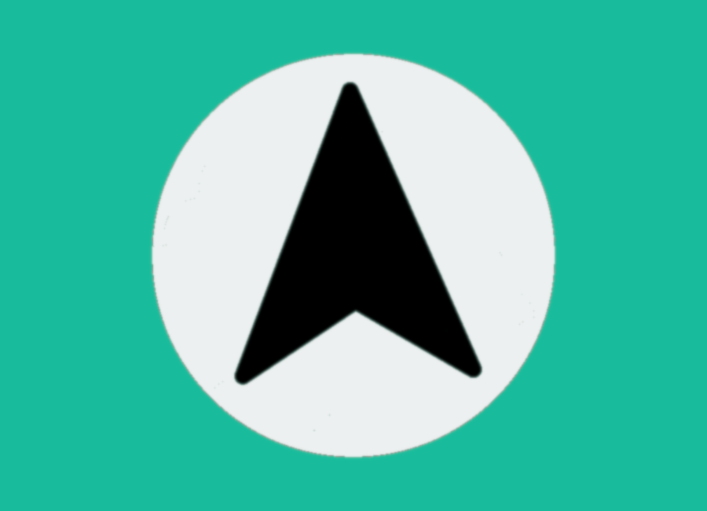
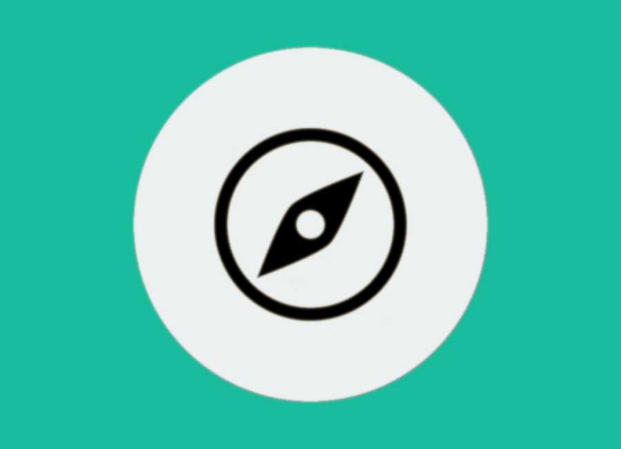
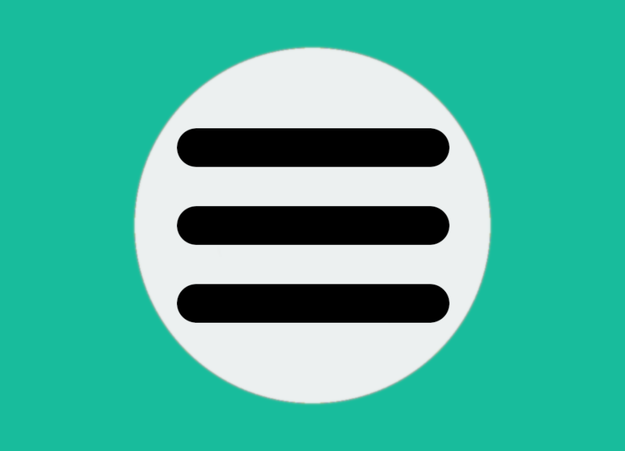

NauticAppReal-Time GPS Tracking and Speed, Responsive Magnetic Heading (CoG), Position, Chartplotter (with automatically updated chart data), Weather Full Forecast, Compass and Logbook
Features

GPS Active Tracking
View your live position on the chart, which allows you to check your Course Over Ground (COG) and Speed Over Ground (SOG) instantly. Get your location on the chart by pressing it, and it also has a compass built-in.
Satellite and Night Layers
Satellite mode overlay to take a more detailed look at the marine data on the chart like points of interest such as marinas and anchorages. Night mode has been carefully designed to be as easy on the eyes as possible at night.
Weather Forecast
A powerful and intuitive feature that lets you easily stay up-to-date with the latest marine weather forecast. With just a few swipes, you can scroll through the forecast and view real-time information on changing wind speed, direction, and weather conditions. This feature is essential for any sailor looking to stay safe and make informed decisions while out on the water. Whether you're a seasoned sailor or just starting out, our app's weather feature will help you navigate with confidence and peace of mind.

Compass
Designed to provide you with the most accurate and reliable information possible. With its intuitive interface and easy-to-read display, you'll always know your magnetic north, cardinal direction, and heading, allowing you to navigate with confidence and precision. Whether you're a seasoned sailor or just starting out, our GPS compass is the perfect tool to help you navigate your way on the water.
Logbook
Effortlessly manage all your passages with just a few clicks. Keep track of your sailing journey by quickly entering, editing, and deleting the logs of all your passages. The logbook feature is designed to simplify the process, saving you time and effort. With automated features, you can easily generate comprehensive reports that capture all the necessary details of your sailing trip. Say goodbye to the traditional logbook and experience the ease and efficiency of our automated logbook system.

Readings
View the live position of your vessel and access important data such as Course Over Ground (COG), Speed Over Ground (SOG), and Heading in real-time. All of these readings are powered by the sensors in your device...
All In One Sailing Tool
NauticApp is aiming to support Signal K out of the box, it will also be featuring a Passage Planning section, Marina and Anchorage Information, Tidal Data API and more... However, Tidal Data and the Weather Full Forecast data are APIs that cost money as does the development of all these features but with your donation, this project can carry on and become your favorite sailing app!
Smart Boating and NautiGuard: A New Era of Boating Innovation
Welcome to NauticApp, where innovation meets the high seas! In this post, we're excited to introduce you to two of our game-changing features: Smart Boating and NautiGuard.
Smart Boating: Your Ultimate Boating Companion
Smart Boating is the heart of NauticApp, revolutionizing the way you experience life on the water. It’s your ultimate boating companion, seamlessly integrating cutting-edge technology into your maritime adventures. Here’s what Smart Boating brings to your fingertips:
Real-Time GPS Tracking: Stay on course with precision and confidence using our real-time GPS tracking feature. Know your exact location, speed, and heading at all times.
Responsive Magnetic Heading (CoG): Navigate with ease using our responsive magnetic heading indicator, ensuring you’re always on the right path.
Position and Chartplotter: Explore the open waters with our intuitive position and chartplotter, powered by the mapbox_gl Flutter plugin.
Weather Full Forecast: Plan your journey with confidence, thanks to our weather full forecast powered by OpenWeather. Stay ahead of changing conditions.
Compass and Logbook: Keep a digital log of your voyages and rely on our precise compass for accurate direction.
Marine IoT Integration: Connect your microcontrollers and sensors to NauticApp for seamless data integration. Monitor, control, and optimize your boat’s systems like never before.
Marine Engineering Hub: Troubleshoot engine issues, maintain schedules, manage spare parts, and monitor engine performance all in one dedicated hub.
Safety Checklist: Ensure your vessel’s safety with a comprehensive checklist, providing peace of mind for every journey.
NautiGuard: Unleashing IoT Potential
NautiGuard is where the future of boating innovation unfolds. It’s a series of small IoT projects, each designed to enhance your boating experience and integrate seamlessly with NauticApp. Here’s a glimpse of what NautiGuard has in store:
BilgeMonitor: Already discussed in detail in our previous post, BilgeMonitor keeps your boat dry by monitoring water levels and automatically activating the bilge pump when needed.
Anemometer (Wind Sensor): Stay ahead of changing wind conditions with real-time wind speed and direction data.
Depth Sounder: Get insights into water depth, critical for safe navigation in varying terrains.
Temperature and Humidity Sensors: Keep tabs on onboard conditions for comfort and safety.
Engine Sensors: Monitor your engine’s vital statistics in real-time, ensuring optimal performance and early issue detection.
Safety Sensors: Enhance onboard safety with sensors designed to detect fire, gas leaks, and other potential hazards.
Stay tuned for more in-depth discussions on each NautiGuard project, and get ready to elevate your boating experience with NauticApp’s Smart Boating and NautiGuard features. The future of boating has arrived.
NautiGuard BilgeMonitor: Your Boat's Guardian
This ingenious device is your boat's guardian against unwanted water intrusions. Let's explore what the BilgeMonitor has to offer:
BilgeMonitor: Keeping Your Boat Dry
Real-Time Water Level Tracking
Say goodbye to worries about water accumulating in your boat’s bilge. The BilgeMonitor provides real-time water level tracking, keeping you informed about any rising water levels, no matter where you are.
Automatic Bilge Pump Control
When the BilgeMonitor detects an elevated water level, it takes action swiftly. It automatically activates the bilge pump, sparing you the hassle of manual intervention and ensuring your vessel stays dry.
Remote Access via NauticApp
You’re always connected to your boat, thanks to NautiGuard’s seamless integration with NauticApp. Monitor your bilge remotely, receive alerts, and take control from anywhere in the world using your smartphone or tablet.
Peace of Mind, Always
With the BilgeMonitor on board, you can enjoy your boating adventures with peace of mind. Whether you’re at the helm or miles away, your boat’s safety is in good hands.
Stay tuned for more NautiGuard projects, each designed to enhance your boating experience. The BilgeMonitor is just the beginning of a new era of boating safety and convenience. Happy sailing!
borrar
Welcome to NauticApp, where innovation meets the high seas! In this post, we're excited to introduce you to two of our game-changing features: Smart Boating and NautiGuard.
Smart Boating: Your Ultimate Boating Companion
Smart Boating is the heart of NauticApp, revolutionizing the way you experience life on the water. It’s your ultimate boating companion, seamlessly integrating cutting-edge technology into your maritime adventures. Here’s what Smart Boating brings to your fingertips:
Real-Time GPS Tracking: Stay on course with precision and confidence using our real-time GPS tracking feature. Know your exact location, speed, and heading at all times.
Responsive Magnetic Heading (CoG): Navigate with ease using our responsive magnetic heading indicator, ensuring you’re always on the right path.
Position and Chartplotter: Explore the open waters with our intuitive position and chartplotter, powered by the mapbox_gl Flutter plugin.
Weather Full Forecast: Plan your journey with confidence, thanks to our weather full forecast powered by OpenWeather. Stay ahead of changing conditions.
Compass and Logbook: Keep a digital log of your voyages and rely on our precise compass for accurate direction.
Marine IoT Integration: Connect your microcontrollers and sensors to NauticApp for seamless data integration. Monitor, control, and optimize your boat’s systems like never before.
Marine Engineering Hub: Troubleshoot engine issues, maintain schedules, manage spare parts, and monitor engine performance all in one dedicated hub.
Safety Checklist: Ensure your vessel’s safety with a comprehensive checklist, providing peace of mind for every journey.
Battery monitors
These provide information on the state of your boat’s batteries, including voltage, current, and remaining capacity. By integrating battery monitors with Signal K, this data can be easily transmitted and displayed in real-time on NauticApp. When selecting a battery monitor, it’s important to consider the accuracy, compatibility with Signal K, and the ability to connect to your boat’s battery system.
Tank Level Sensors
Water and fuel tank sensors provide information on the level and remaining capacity of your boat’s water and fuel tanks. By integrating these sensors with Signal K, this data can be easily transmitted and displayed in real-time on NauticApp. When selecting water and fuel tank sensors, it’s important to consider the compatibility with Signal K, the type of tank (e.g. plastic, metal), and the measurement range.
Temperature and Humidity Sensors
Explain how temperature and humidity sensors can be useful for monitoring the interior conditions of a boat. Provide examples of popular temperature and humidity sensors that can be integrated with NauticApp through Signal K.
Depth Sensors
This kind of sensors provide information on water depth, helping sailors navigate safely and avoid running aground. When selecting a depth sensor, it’s important to consider the measurement range, accuracy, and compatibility with Signal K.